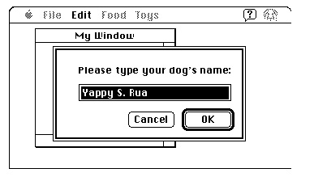

Accessing Menus From a Dialog Box
In System 7, the Menu Manager or your application can allow the user to access selected menus in the menu bar while interacting with an alert box or a modal dialog box. This allows users to make menu selections while your application is displaying an alert box or a modal dialog box. For example, a user might want to turn on Balloon Help for assistance in figuring out how to respond to an alert box. Similarly, if the modal dialog box contains several editable text fields, the user might find it simpler to copy text
from one text field and paste it into another. Figure 3-36 shows a modal dialog box
with an editable text field. Note that only the Edit and Help menus are enabled and all other menus are disabled. This gives the user access to editing commands and also to Balloon Help.Figure 3-36 Menu access from a modal dialog box
- Note
- In System 6, user access to menus in the menu bar is prohibited from an alert box or a modal dialog box unless your application specifically allows it. For example, in System 6, your application must provide a filter procedure to replace the standard filter procedure if you want to support the keyboard equivalents of the standard Edit menu commands in a modal dialog box. In System 7, you can let the Menu Manager enable these commands for you.

When your application displays a modeless or movable modal dialog box, your application should adjust its menus as appropriate for that dialog box. For example, when a movable modal dialog box is the frontmost window, your application should enable the Apple menu, enable the Edit menu if your dialog box contains an editable text item, enable or disable any other menus as needed, and disable any items it added to the Help menu if the user can't perform those actions while the dialog box is displayed.
When your application displays an alert box, system software automatically disables all of your application's menus except for the Help menu (in which all items are disabled except for the Show Balloons/Hide Balloons command).
When your application displays a modal dialog box, your application should also enable and disable its menus as appropriate. For example, you should enable the Edit menu if your dialog box contains an editable text item and disable any items it added to the Help menu if the user can't perform those actions while the dialog box is displayed. If your application handles access to the menu bar from a modal dialog box, it should disable the Apple menu or the first item in the Apple menu.
If your application does not specifically handle access to the menu bar from an alert box or a modal dialog box, in some cases the Menu Manager automatically disables the appropriate menus for you, as described in the following paragraphs.
When your application displays an alert box or a modal dialog box (that is, a window of type
dBoxProc), the Menu Manager (in conjunction with the Dialog Manager) always appropriately adjusts the system-handled menus and performs these actions:In addition, if your application then calls the
- Disables all menu items in the Help menu except the Show Balloons (or Hide Balloons) command, which it enables.
- Disables all menu items in the Application menu.
- Enables the Keyboard menu if it appears in the menu bar, except for the About Keyboards command, which it disables.
ModalDialogprocedure, the Menu Manager (in conjunction with the Dialog Manager) performs two other actions:When the user dismisses the modal dialog box, the Menu Manager restores all menus to the state they were in prior to the appearance of the modal dialog box.
- Disables all of your application's menus.
- Enables commands with the standard keyboard equivalents Command-X, Command-C, and Command-V if the modal dialog box contains a visible and active editable text field. The user can then use either the menu commands or their keyboard equivalents to cut, copy, and paste text. (The menu item having keyboard equivalent Command-X must be one of the first five menu items.)
In some cases actions 4 and 5 do not occur when you call
ModalDialog. The enabling and disabling described in steps 4 and 5 do not occur if any of these conditions is true:
- Your application does not have an Apple menu.
- Your application has an Apple menu, but the menu is disabled when the modal dialog box is displayed.
- Your application has an Apple menu, but the first item in that menu is disabled when the dialog box is displayed.
When your application displays alert boxes or modal dialog boxes with no editable
- Note
- If your application already handles access to the menu bar from a
modal dialog box and you do not want the automatic menu enabling and disabling provided by System 7 to occur, you should ensure that one or more of those conditions is true when you display a modal
dialog box.
text items, your application can allow system software to handle menu bar access. In
all other cases, your application should handle its own menu bar access.System software always leaves the Help, Keyboard, and Application menus and their commands available when you display movable modal dialog boxes and modeless dialog boxes. For these types of dialog boxes, you must disable menus as appropriate and handle menu bar access as appropriate given their contents.
When your application displays a movable modal dialog box (a window of type
movableDBoxProc), your application does not need to adjust the system-handled menus but should disable all its other menus except the Apple menu and--if your movable modal dialog box contains editable text items--the Edit menu. Leave the
Apple menu enabled so that the user can use it to open other applications, and leave the Edit menu enabled so that the user can use the Cut, Copy, and Paste commands within the editable text item. (You can also leave your Undo and Clear commands enabled; otherwise, disable all other commands in the Edit menu.)When your application removes a movable modal dialog box, modeless dialog box, or modal dialog box with editable text items, your application must restore to their previous states any menus that it disabled prior to displaying the dialog box. See the chapter "Dialog Manager" in this book for additional information on dialog boxes.